What is a CCG
A CCG (collectible card game) is a genre where each player builds a deck of cards with different creatures, spells and effects, then takes turns playing them during a match, spending a limited resource, trying to defeat the opponent before they defeat you. Whoever makes better use of their cards and resources in the moment wins.
In Home's Journey, two factions face off — the Tavern and Jeet. Each has its own followers (Travelers), as well as Artifacts, Worlds and Spells, all in service of the Great Confrontation. Whoever brings the opponent's base health down to zero first wins.
Game Modes
Hot Seat
Two players take turns on the same device, passing it to each other between turns — the opponent's screen is hidden during the handoff so nobody peeks at the other's hand.
VS AI
Play against a computer opponent on the same device. The rules are the same as Hot Seat — the AI simply takes the second player's turns.
Classic
Each side is handed a ready-made, balanced deck — nothing to build, you can start the match right away.
Rush
Instead of a ready-made deck, you're given a deckbuilder — build your own deck from the cards available to your faction.
Choosing a Faction and Who Goes First
Before the match, you choose which faction to play — Tavern or Jeet. A dice roll then randomly decides who goes first. Whoever goes second gets a bonus card as compensation — UNSEEN: a neutral spell that isn't part of the deck and doesn't take part in the mulligan — it's granted separately, right after it ends.
Mulligan
Before the game begins, each player sees their opening hand of 5 cards and may shuffle it back into the deck and draw a new one — up to 3 times. The first reshuffle has no penalty, after the 2nd you get 1 fewer card, after the 3rd — 2 fewer. Mulligan isn't mandatory: if you're happy with your hand, just press Ready. Once both players confirm ready — the game begins.
The Card
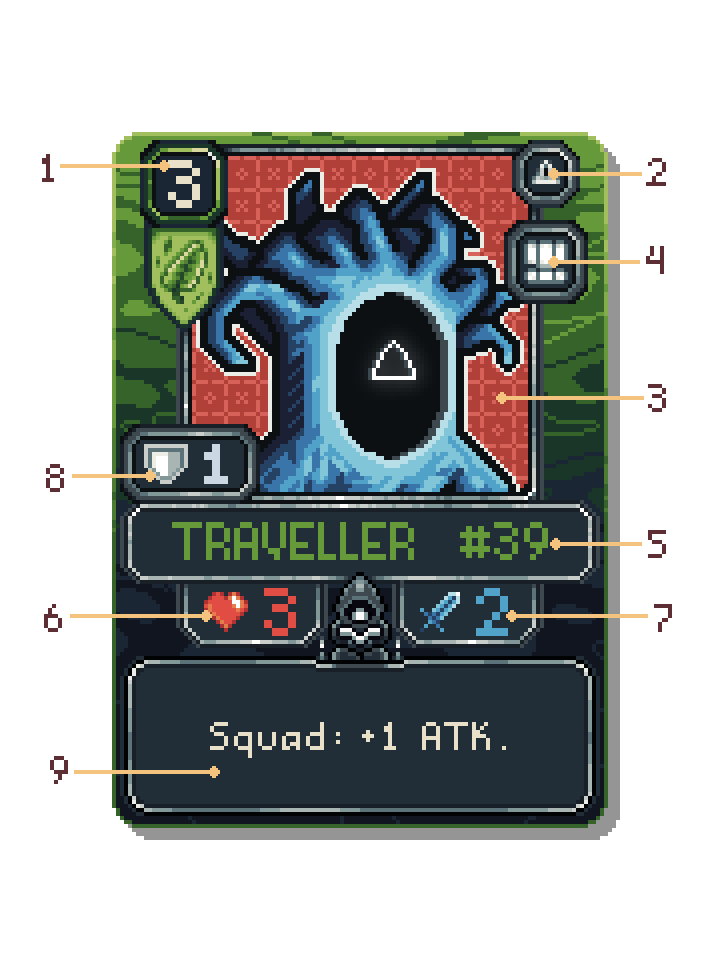
1. Cost
How much Essence it takes to play this card.
2. Card Type
The icon in the top-right corner shows this card's type.
3. Art
The card's illustration, drawn on a 64x64 pixel canvas.
4. Ability Tags
Icons next to the art — the card's key abilities, all explained in the Glossary.
5. Name
The card's name.
6. Health (HP)
How much damage the creature can take before it dies. Shown with a heart.
7. Attack (ATK)
How much damage the creature deals when attacking. Shown with a sword.
8. Armor
An extra buffer on top of health — not every creature has it. More about Armor.
9. Ability Text
Describes what the card does — from passive effects to active buttons. If anything written in a card's text contradicts these rules, the card's text always takes priority.
Card Types

 Common and Unique Travelers
Common and Unique Travelers
These are creature cards, placed on the battleground. When played, they enter the battleground Sleeping and can't act until your next turn. After attacking an opponent's card or their Base, or using its active ability, a creature is considered Exhausted. Creatures killed in battle go to the Graveyard and can be revived.
 Spells
Spells
Spells trigger instantly the moment they're played — then go to the Void. All spells deal magic damage.
 Worlds
Worlds
A World is a permanent card that sits beneath the battleground and passively affects the game while active. Only one World can be active at a time. Playing a second one replaces the first — the old one goes to the Void. A World can't be targeted by a creature's attack, a spell, or an Artifact's active ability.
 Artifacts
Artifacts
Artifacts also sit below the battleground, and likewise only one can be active at a time — playing a second replaces the first, sending it to the Void. Artifacts with active abilities sleep on their first turn, just like creatures. An Artifact also can't be targeted by a creature, a spell, or another Artifact's active ability.
The Board
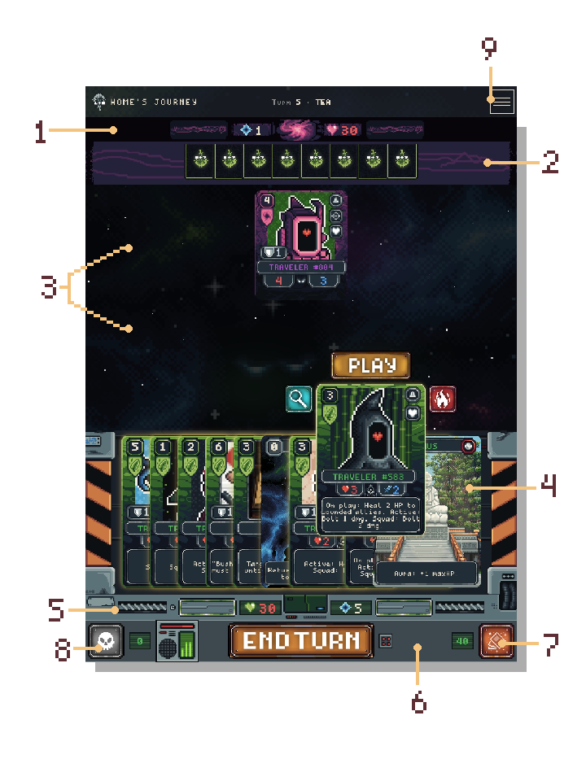
1. Opponent's Status Bar
Shows the opponent's base health and Essence, and the base itself, which can be targeted by an attacking creature. It also shows the opponent's active World and Artifact once played (press and hold with mouse or finger to see the card's details).
2. Opponent's Hand Zone
The opponent's cards face down — only their count is visible.
3. Battleground
Where both sides' creatures are placed. You can have at most 6 creature cards on the battleground at once.
4. Your Hand Zone
Your cards, drawn from the Deck, ready to play.
5. Your Status Bar
Shows your base health, your Essence, and the base itself. Your played World and Artifact also appear here (press and hold with mouse or finger to see the card's details).
6. Bottom Bar
The centered "End Turn" button, counters for cards left in the Deck and creature cards in the Graveyard, and the button that opens the Graveyard window.
7. Deck
Cards you haven't drawn yet. Only their count is visible. You draw 1 card from the deck at the start of every turn. Once the deck is empty, there are no more cards to draw.
8. Graveyard
Where creature cards killed in battle go and are displayed. Cards at the top of the window are the ones "on top of the graveyard."
Void
Holds burned cards, played spells, and replaced worlds — nothing can bring them back. The Void has no zone of its own on screen — cards there simply vanish from the game forever.
9. Battle Log
A side panel with the match's event history.
Playing a Turn
Essence
Essence is your resource. You start with a maximum of 1 and gain +1 every turn — so by turn 5 you have 5 Essence, up to a maximum of 10. Any unused Essence is lost at the end of the turn and refills to its maximum at the start of your next one.
Playing a Card
Select a card in your hand and press
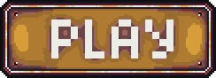
to play it, spending the matching amount of Essence. Travelers and Worlds/Artifacts stay on the battleground, Spells trigger immediately and go to the Void.Burning
Once per turn you may burn a card from your hand: it goes to the Void forever, and you get +1 Essence for this turn. Press
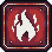
above the chosen card to do so.Inspecting a Card
Press
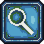
if you want to see a card enlarged. For cards on the battlefield, press and hold (or long-press on a touchscreen) the card you're interested in to see its full version along with any status effects currently active on it.Targeted Spells
Some spells and active abilities require choosing a target — after trying to play a card or use an ability, the game pauses and asks you to click the target card. You can also tap your hand zone to cancel — for a spell, the card returns to your hand and the Essence cost isn't spent.
Attacking
To attack: press your creature card, then press an available target — highlighted in red — either an enemy card or the opponent's Base above. You can't attack your own creatures or your own base.
Exchanging Blows
When a creature card attacks an enemy card, it deals damage to the target first — then, if the enemy creature isn't Feared and isn't Exhausted, it strikes back with a counter-attack. After that, if the enemy creature survived, the attacking card's negative "On attack" effects (Fear, Burn, Rage, Vampiric, etc.) are applied to it. Or, if it died, its "On death" effects trigger instead.
Sleeping and Exhausted
A creature card that just entered the battleground is Sleeping and can't act until your next turn. After attacking or using an active ability, a creature becomes Exhausted: it can't act again — or counter-attack — until the opponent's turn ends.
Active Abilities
Some creature cards and Artifacts have a special action you trigger manually by pressing the card and choosing the ability button that appears. Active abilities don't cost Essence, but can only be used once per turn, instead of attacking — after which the creature card or Artifact is considered exhausted.
Victory
As soon as one base reaches 0 health, that player loses — and the other player wins!
Glossary
Sleeping
A creature card or Artifact entered the battleground this turn and can't act. Wakes up at the start of your next turn.
Exhausted
A creature card or Artifact has already attacked or used an active ability this turn. Can't act again — or counter-attack — until the following turn. Shown as a darkened card.
Aura
A passive effect on the battleground that boosts all allies while the card with the aura is on the battleground. The bonus disappears immediately once the card leaves the battleground. Multiple aura sources stack. An aura doesn't boost itself — only allies.
Squad
When you have 3 or more Travelers of the same type on your battleground at once, they all automatically get a bonus. The bonus activates the moment the third one enters and disappears as soon as the squad drops below three. Each squad has its own bonus type.
Max Health (maxHP)
Auras and spells can increase a creature card's maximum health. If the creature is at full health, its current health also grows (3/3 becomes 4/4). If it's already wounded, only the maximum grows (2/3 becomes 2/4). Healing never pushes health above the maximum. You can always hover a creature card's health indicator on the battleground to see its current maximum.
Heal X
Restores X lost health, but never above the maximum. If a card's text says "Active: Heal X", it means that on the battleground, instead of attacking, you can press the card and then — target an ally and restore X health to it. After using this ability, the creature card is considered exhausted.
Clean
Removes all negative effects from a creature card, such as Burn, Fear and Taunt Break.
Bolt
If a card's text says "Active: Bolt X", it means that on the battlefield, instead of attacking, you can press the card and then
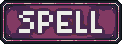
— target an enemy creature card and deal it X damage. This ability counts as magical, meaning it ignores Armor, but it cannot damage creatures with Ward.Return
The act of returning a creature card from the battleground back to its owner's hand.
Revive
Returns a creature from the Graveyard to the battleground at X health, or at full health if no number is written on the card's text. A revived creature enters the battleground Sleeping. Revived creatures don't trigger "On play" effects.
Sacrifice
An active action that destroys one of your own creatures in exchange for the bonus written on the card with this ability. The destroyed creature card goes to the Graveyard and can be revived.
Draw
If a card's text mentions "Draw" for some action, performing that action immediately grants you an extra card from the deck, as long as any are left.
Lose
If a card's text mentions "Lose" for some action, performing that action discards one random card from the opponent's hand into the Void.
On Turn
The effect triggers automatically at the start of the player's turn, before any actions.
On Play
The effect triggers the moment a card is played from hand onto the battleground.
On Attack
The effect triggers every time this creature card attacks — whether an enemy creature or the base (negative effects don't affect the base).
On Death
The effect triggers when this creature card's attack kills an enemy creature card directly.
 Vanguard
Vanguard
A creature card can act the same turn it enters the battleground. It skips the Sleeping state.
 Provoke
Provoke
All of the opponent's creature card attacks must target this creature.
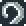
InterceptIf there's no creature card on the field forcing all attacks onto itself (Bushido/Provoke) — once per turn, one enemy attack is automatically redirected onto this creature, no matter which card the attacker chose. If the attacker already picked this creature, the intercept isn't spent. With multiple Intercept creatures, whichever entered the battleground first triggers first.
 Pierce
Pierce
After attacking an enemy creature card, if it dies from the hit, any remaining excess damage carries over to the enemy base.
 Fear
Fear
With this ability, a creature card inflicts the "Fear" negative effect on the enemy card the moment it attacks. Creature cards under Fear skip their next turn and deal no counter-damage.
Invisible
This creature card can't be targeted for attack while there's at least one non-Invisible ally on the battleground. If every creature on the battleground is Invisible, any of them can be attacked. It also takes no counter-damage when it attacks.
 Rage
Rage
Every time this creature attacks, it permanently gains +1 attack. The bonus resets if the creature dies. Stacks with other bonuses from Auras, Squads, or Spells.
 Burn
Burn
When this creature attacks, the enemy creature gets the "Burn" negative effect. Burning creatures lose 1 health at the start of each of their turns. The effect is permanent until the creature dies. A creature that dies from Burn goes to the Void.
 Regen X
Regen X
The creature restores X health to itself at the start of each of your turns, but never above its maximum.
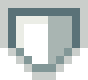
ArmorAn extra buffer on top of health. Absorbs damage first, but only from regular attacks. Magic damage ignores Armor completely. Refills to its maximum at the start of your turn. Can stack from different Auras, Squad bonuses, or Spells.
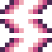
Solana ShieldA protective layer on top of health — fully absorbs the first incoming hit on this creature, of any kind, including any side-effects that would come with that hit. Triggers once per time the card enters the battleground. If the creature leaves the battleground and returns, the shield recharges.
Untamed
The creature clears its own Exhausted state at the start of the opponent's turn.
Ward
This creature card completely ignores magic damage, and cannot be Feared or Burned.
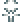
Incarnation XWhen this creature dies, it revives from the Graveyard onto the battleground X of your turns later, at full health and Sleeping. Triggers only once — if it dies again after returning, it goes to the Void instead.
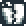
Taunt BreakOn attack, inflicts a negative effect that removes Provoke from the target until the end of the turn.
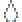
VampiricOn its own attack, the creature heals itself for exactly the health it actually removed from the target (damage absorbed by Armor or Shield doesn't count) — but never more than its own missing health.
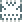
EraseIf this creature's attack kills an enemy, the fallen card is sent to the Void instead of the Graveyard, and this creature fully restores its health and clears its own Burn. Only triggers on a kill by direct attack.
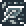
StealthThis creature card can't be targeted by attacks until it attacks for the first time. That first attack deals no counter-damage. One-time — once broken, does nothing for the rest of the game.
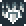
Fire Shield XWhoever attacks this creature takes X damage back, regardless of whether this creature survives the hit or not.
Суть игры
ККИ (коллекционная карточная игра) — жанр, в котором каждый игрок собирает колоду из карт с разными существами, заклинаниями и эффектами, а затем в партии по очереди разыгрывает их, тратя ограниченный ресурс, чтобы одолеть соперника раньше, чем он одолеет вас. Побеждает тот, кто лучше распорядится своими картами и ресурсами в конкретной ситуации на поле.
В Home's Journey друг другу противостоят две фракции — Таверна и Джит. У каждой свои последователи (Путешественники), а также Артефакты, Миры и Заклинания, чтобы одержать победу в Великом противоборстве. Побеждает тот, кто первым сведёт здоровье базы соперника к нулю.
Режимы игры
Горячий стул
Два игрока играют по очереди на одном устройстве, передавая его друг другу между ходами — экран соперника скрывается на время передачи, чтобы никто не подглядел в чужую руку.
Игра с ИИ
Играйте против компьютерного соперника на том же устройстве. Правила те же, что и в Горячем стуле — просто вместо второго игрока ходит ИИ.
Классик
Каждой стороне выдаётся уже готовая, сбалансированная колода — собирать ничего не нужно, можно сразу начинать партию.
Раш
Вместо готовой колоды вам предложат декбилдер — соберите свою колоду сами, из карт, доступных вашей фракции.
Выбор фракции и первый ход
Перед началом партии вы выбираете, за какую фракцию играть — Таверну или Джит. Затем бросок кубика случайно определяет, кто ходит первым. Игрок, который ходит вторым, в качестве компенсации получает дополнительную карту — UNSEEN: нейтральное заклинание, которое не входит в колоду и не участвует в мулигане — выдаётся отдельно, сразу после него.
Мулиган
До начала игры каждый игрок видит свою начальную руку из 5 карт и может перетасовать её обратно в колоду и взять новую — до 3 раз. Первая перетасовка не имеет штрафа, после 2-й вы получите на 1 карту меньше, после 3-й попытки — на 2 меньше. Мулиган не обязателен: если рука устраивает, просто нажмите Ready. Когда оба игрока подтверждают готовность — игра начинается.
Карта
1. Стоимость (Cost)
Сколько Эссенции нужно потратить, чтобы сыграть эту карту.
2. Тип карты
Значок в правом верхнем углу — обозначающий тип этой карты.
3. Арт
Иллюстрация карты выполненная на 64x64 пиксельном холсте.
4. Теги способностей
Иконки рядом с артом — ключевые способности карты, все они раскрыты в Глоссарии.
5. Название
Имя карты.
6. Здоровье (HP)
Сколько урона существо может выдержать, прежде чем погибнет. Обозначено сердцем.
7. Атака (ATK)
Сколько урона существо наносит при атаке. Обозначено мечом.
8. Броня (Armor)
Дополнительный запас прочности сверх здоровья. Подробнее о «Броне».
9. Текст способности
Описание того, что делает карта — от пассивных эффектов до активных кнопок. Если что либо написанное в тексте карты противоречит правилам, текст карты всегда имеет приоритет.
Типы карт
Рядовые и Уникальные Путешественники
Это карты-существа, выставляемые на поле. При игре они выходят на поле в состоянии сна и не могут действовать до следующего вашего хода. Совершив атаку на карту противника или его Базу, либо применив свое активное действие — существо будет считаться уставшим. Существа, убитые в бою, уходят на Кладбище и могут быть воскрешены.
Заклинания
Заклинания срабатывают в момент розыгрыша мгновенно — после чего уходят в Пустоту. Все заклинания наносят магический урон.
Миры
Мир — постоянная карта, которая лежит под вашим полем и пассивно влияет на игру, пока активна. Одновременно может быть только один Мир. Если сыграть второй — первый уходит в Пустоту. Мир не может быть выбран целью атаки существа, заклинания или активной способности Артефакта.
Артефакты
Артефакты тоже лежат под полем, и также одновременно может быть только один Артефакт, сыграв второй - первый будет заменен и отправлен в Пустоту. Артефакты с активными способностями спят в первый ход, как существа. Также не может быть целью существа, заклинания или активной способности другого Артефакта.
Поле
1. Статус панель противника
Здесь отображается Здоровье базы противника и состояние его Эссенции, а также сама база, которую можно выбирать как цель для атаки существом на поле. Здесь же видно какие активный Мир и Артефакт противника, после того как они будут сыграны (вы можете совершить зажатие мышкой или пальцем, чтобы увидеть детали карты на своем экране).
2. Зона руки соперника
Карты соперника рубашкой вверх — видно только их количество.
3. Поле боя
Место куда выставляются карты - существа обеих сторон. Максимум можно выставлять 6 карт-существ за раз.
4. Зона руки игрока
Ваши карты пришедшие из Колоды для игры.
5. Статус панель игрока
Здесь видно Здоровье базы игрока, состояние его Эссенции и сама база. А также здесь будут появляться сыгранные Мир и Артефакт (вы можете совершить зажатие мышкой или пальцем, чтобы увидеть детали карты на своем экране).
6. Нижняя панель
Зона где по центру расположена кнопка "Конец Хода", счетчики оставшихся карт в Колоде, количества карт-существ на Кладбище и сама кнопка для открытия окна Кладбища.
7. Колода
Карты, которые вы ещё не взяли. Видно только их количество. Вы берёте 1 карту из колоды в начале каждого хода. Когда колода закончилась — новых карт взять будет неоткуда.
8. Кладбище
Место куда попадают и где отображаются карты-существ убитые в бою. На верху окна будут находится те карты, которые будут являться "верхними на кладбище".
Пустота
Хранит сожжённые карты, сыгранные заклинания и заменённые миры — ничто не может их вернуть. Отдельной зоны на экране у Пустоты нет — попавшие туда карты просто пропадают из игры навсегда.
9. Лог Битвы
Боковая панель с историей событий партии.
Ход игры
Эссенция
Эссенция — ваш ресурс. Вы начинаете с максимумом 1 и получаете +1 каждый ход — то есть к 5-му ходу у вас 5 Эссенции, вплоть до максимума в 10. Неиспользованные Эссенция в течение хода сгорает и восстанавливается к своему максимуму на следующий ход. Наведя курсором на индикатор вашей Эссенции или противника, вы всегда можете увидеть какой на данный момент максимум.
Розыгрыш карты
Выберите карту в руке и нажмите , чтобы разыграть её, потратив соответствующее количество Эссенции.
Сжигание
Один раз за ход вы можете сжечь карту из руки: она уходит в Пустоту навсегда, а вы получаете +1 Эссенцию на этот ход. Нажмите над выбранной картой для этого.
Просмотр карты
Нажмите если хотите увидеть увеличенную карту. Для карт на поле боя, зажмите курсором на интересующей вас карте (или зажмите пальцем на сенсорном экране), вы увидите ее полную версию и текущими статусами эффектов действующих на данный момент на эту карту.
Направленные заклинания
Некоторые заклинания и активные способности требуют выбора цели — после попытки разыграть карту или применить способность, игра поставит партию на паузу и попросит кликнуть по карте-цели, либо вы можете нажать в зону своей руки и отменить это действие, в случае с заклинанием карта вернется вам в руку и стоимость эссенции не будет списана.
Атака
Чтобы атаковать: нажмите на свою карту-существо, затем на доступную цель на данный момент, подсвеченную красным свечением, это может быть вражеская карта или Базу соперника сверху. Своих существ или свою базу атаковать нельзя.
Обмен ударами
Когда карта-существо атакует карту противника, оно сначала наносит цели урон, затем если существо противника не в Страхе и не Уставшее, наносит контратаку. После чего, если существо противника выжило, на него накладываются отрицательные эффекты атакующей карты (On attack) (Страх, Горение, Ярость, Вампиризм и т.д.). Либо при его смерти, срабатывают действия «При убийстве» (On death).
Сон и Истощение
Карта-существо, только что вышедшее на поле, спит и не может действовать до вашего следующего хода. Использовав атаку или активную способность, существо становится Истощённым: до конца хода соперника оно не может действовать снова, а также отвечать контратаками на удары противника.
Активные способности
У некоторых карт-существ и Артефактов есть специальное действие, которое вы запускаете вручную, нажав на карту и выбрав появившуюся кнопку способности. Активные способности не стоят Эссенции, но могут использоваться лишь раз за ход, вместо атаки — после этого карта-существо или Артефакт будет считаться уставшим.
Победа.
Как только одна из баз достигнет 0 здоровья, Игрок будет считаться проигравшим, а другой игрок соотвественно победителем!
Глоссарий
Сон (Sleep)
Карта-существо или Артефакт вышло на поле в этот ход и не может действовать. Просыпается в начале вашего следующего хода.
Усталость (Exhausted)
Карта-существо или Артефакт уже атаковало или использовало активную способность в этот ход. Не может действовать снова до следующего хода, а также отвечать контратаками на удары противника. Отображается как затемненная карта.
Аура (Aura)
Пассивный эффект поля, который усиливает всех союзников, пока карта с аурой на поле. Бонус исчезает немедленно, когда карта покидает поле. Несколько источников ауры складываются. Аура не усиливает саму себя — только союзников.
Отряд (Squad)
Когда на вашем поле одновременно стоят 3 и более Путешественника одного типа, все они автоматически получают бонус. Бонус активируется в момент выхода третьего и исчезает, как только отряд становится меньше трёх. У каждого отряда свой тип бонуса.
Максимальное Здоровье (maxHP)
Ауры и заклинания могут увеличивать максимальное здоровье карты-существа. Если существо полностью здорово — текущее здоровье тоже растёт (3/3 становится 4/4). Если уже ранено — растёт только максимум (2/3 становится 2/4). Лечение не дает очков здоровья выше максимума. Вы всегда можете навести курсор на индикатор здоровья у карты-существа на поле и увидеть ее текущий максимум.
Лечение Х (Heal X)
Восстановление утраченного здоровья на Х, но не выше максимума. Если в тексте карты написано, что есть "Active: Heal X", это значить что на поле боя, вместо атаки вы можете нажать на — выбрать целью своего союзника и восстановить ему Х здоровья. После применения этой способности существо будет считаться уставшим.
Очищение (Clean)
Снять все отрицательные эффекты с карты-существа, такие как Горение, Страх и Слом провокации.
Болт (Bolt)
Если в тексте карты написано, что есть "Active: Bolt X", это значить что на поле боя, вместо атаки вы можете нажав на карту и затем на — выбрать целью карту-существо противника и нанести ему X ран. Эта способность считается магической и значить что будет игнорировать броню, однако не сможет нанести раны существам с Оберегом.
Возврат (Return)
Действие возврата карты-существа с поля боя обратно в руку хозяина.
Воскрешение (Revive)
Возвращение существа с Кладбища на поле с X здоровья, либо с полным здоровьем если никакая цифра не написана в тексте карты. Воскрешенное существо выходит на поле в состоянии сна. Воскрешённые существа не запускают эффекты «On play».
Жертва (Sacrifice)
Активное действие, которым можно уничтожить одно из своих существ и получить за это бонус написанный на карте с этой способностью. Уничтоженная карта-существо уходит на Кладбище и может быть воскрешено.
Доп.карта (Draw)
Если текст карты упоминает "Draw" при каком либо действии - за выполненения этого действия вы тут же получите дополнительную карту их колоды, если они еще есть у вас в запасе.
Потеря карты (Lose)
Если тексте карты упоминает "Lose" при каком либо действии - сбросить одну случайную карту из руки в Пустоту.
В начале хода (On turn)
Эффект срабатывает автоматически в начале хода игрока, до любых действий.
При выходе (On play)
Эффект срабатывает в момент розыгрыша карты из руки на поле.
При атаке (On attack)
Эффект срабатывает каждый раз, когда эта карта-существо атакует — будь то вражеское существо или база (отрицательные эффекты не действуют на базу).
При убийстве (On death)
Эффект срабатывает, когда атака этой карты-существа убивает вражескую карту-существо напрямую.
Авангард (Vanguard)
Карта-существо может действовать в тот же ход, когда вышло на поле. Оно пропускает состояние сна.
Провокация (Provoke)
Все атаки карт-существ противника должны быть направлены на это существо.
Перехват (Intercept)
Если на поле нет ни одной карты-существа, обязывающей атаковать только её (Бусидо/Провокация) — одна атака противника за ход автоматически перенаправляется на это существо, независимо от того, кого выбрал атакующий. Если атакующий сам выбрал это существо целью — перехват не расходуется. Срабатывает один раз за ход. Между несколькими существами с Перехватом первым срабатывает то, что раньше вышло на поле.
Пронзание (Pierce)
После нанесения атаки по карте-существу противника и в случае её гибели, весь остаточный сверх-урон перекидывается на базу противника.
Страх (Fear)
Обладая этой способность, карта-существо в момент своей атаки накладывает отрицательный эффект "Страх" на карту-противника. Карты-существа находясь под действием "Страха" пропускают свой следующий ход и не наносят ответного урона.
Невидимость (Invisible)
Эта карта-существо не может быть выбрано целью для атаки, пока на поле боя есть хотя бы один союзник без Невидимости. Если абсолютно все существа на поле боя невидимы — атаковать можно любое из них. Также при нанесении удара, не получает ответного удара.
Ярость (Rage)
Каждый раз, когда это существо атакует, оно навсегда получает +1 атаки. Бонус сбрасывается, если существо умирает. Суммируется с другими бонусами от Аур или бонусов от Отрядов или Заклинаний.
Горение (Burn)
Когда это существо атакует, существо противника получает отрицательный эффект "Горение". Горящие существа теряют 1 здоровье в начале каждого своего хода. Эффект постоянный до смерти существа. Умерев от горения, карта попадает в Пустоту.
Реген X(Regen)
Существо восстанавливает себе X здоровья в начале каждого вашего хода, но не выше максимума.
Броня (Armor)
Дополнительный запас прочности сверх здоровья. Поглощает урон первым, но только от обычных атак. Урон от магического урона Броню полностью игнорирует. Восполняется до максимума в начале вашего хода. Может суммироваться от разных Аур, бонусов Отряда или Заклинаний.
Солановский Щит (Solana Shield)
Защитный слой поверх здоровья - полностью поглощает первый входящий урон по этому существу — любого типа, включая возможные сопутствующие эффекты в момент этой атаки. Срабатывает один раз за выход карты на поле. Если существо покинет поле и вернётся снова — щит перезаряжается.
Неукротимость (Untamed)
Существо снимает с себя Усталость в начале хода противника.
Оберег (Ward)
Эта карта-существо полностью игнорирует магический урон, а также не может быть подвержена Страху или Поджогу.
Инкарнация X(Incarnation)
Когда это существо погибает, оно воскрешается с Кладбища на поле спустя X ваших ходов, с полным здоровьем и в состоянии сна. Срабатывает только один раз — если оно погибнет снова после возвращения, оно уходит в Пустоту.
Слом Провокации (Taunt Break)
При атаке, накладывает отрицательный эффект снимающий Провокацию с цели до конца хода.
Вампиризм (Vampiric)
При своей атаке существо восстанавливает себе ровно столько здоровья, сколько реально сняло с цели (урон, поглощённый Бронёй или Щитом, не считается) — но не больше своего максимума.
Стирание (Erase)
Если атака этого существа убивает врага — погибшая карта противника вместо Кладбища отправляется в Пустоту, а само существо полностью восстанавливает здоровье и очищается от эффекта Горения. Срабатывает только при убийстве прямой атакой.
Скрытность (Stealth)
Эта карта-существо не может быть выбрана целью для атаки, пока не атакует в первый раз сама. Эта первая атака не получает ответного удара. Срабатывает один раз — после того как скрытность снята, эффект больше не действует до конца партии.
Огненный Щит X (Fire Shield)
Каждый, кто атакует это существо, получает X урона в ответ — независимо от того, выживет ли само существо после этого удара.
O que é um JCC
Um JCC (jogo de cartas colecionável) é um gênero em que cada jogador monta um baralho com cartas de diferentes criaturas, feitiços e efeitos, e depois joga essas cartas por turnos durante uma partida, gastando um recurso limitado, tentando derrotar o oponente antes que ele derrote você. Vence quem usa melhor suas cartas e recursos na situação do momento.
Em Home's Journey, duas facções se enfrentam — a Taverna e o Jeet. Cada uma tem seus próprios seguidores (Viajantes), além de Artefatos, Mundos e Feitiços, tudo a serviço do Grande Confronto. Vence quem reduzir a vida da base do oponente a zero primeiro.
Modos de Jogo
Cadeira Quente
Dois jogadores se revezam no mesmo dispositivo, passando-o um para o outro entre os turnos — a tela do oponente fica oculta durante a troca para que ninguém veja a mão do outro.
Contra IA
Jogue contra um oponente controlado pelo computador, no mesmo dispositivo. As regras são as mesmas da Cadeira Quente — a IA simplesmente joga os turnos do segundo jogador.
Clássico
Cada lado recebe um baralho já pronto e balanceado — não é preciso montar nada, dá para começar a partida na hora.
Rush
Em vez de um baralho pronto, você recebe um montador de baralhos — monte o seu próprio, a partir das cartas disponíveis para sua facção.
Escolha de Facção e Quem Começa
Antes da partida, você escolhe qual facção jogar — Taverna ou Jeet. Depois, um lançamento de dado decide aleatoriamente quem começa. Quem joga em segundo recebe uma carta bônus como compensação — UNSEEN: um feitiço neutro que não faz parte do baralho e não participa do mulligan — é concedido separadamente, logo depois dele.
Mulligan
Antes do jogo começar, cada jogador vê sua mão inicial de 5 cartas e pode embaralhá-la de volta no baralho e comprar uma nova — até 3 vezes. O primeiro reembaralhamento não tem penalidade, depois do 2º você recebe 1 carta a menos, depois da 3ª tentativa — 2 a menos. O mulligan não é obrigatório: se a mão estiver boa, basta pressionar Ready. Quando os dois jogadores confirmam que estão prontos — o jogo começa.
A Carta
1. Custo (Cost)
Quanto de Essência é preciso gastar para jogar esta carta.
2. Tipo de Carta
O ícone no canto superior direito mostra o tipo desta carta.
3. Arte
A ilustração da carta, desenhada em uma tela de 64x64 pixels.
4. Tags de Habilidade
Ícones ao lado da arte — as habilidades-chave da carta, todas explicadas no Glossário.
5. Nome
O nome da carta.
6. Vida (HP)
Quanto de dano a criatura aguenta antes de morrer. Indicado por um coração.
7. Ataque (ATK)
Quanto de dano a criatura causa ao atacar. Indicado por uma espada.
8. Armadura (Armor)
Uma reserva extra além da vida — nem toda criatura tem. Mais sobre Armadura.
9. Texto de Habilidade
Descreve o que a carta faz — de efeitos passivos a botões ativos. Se algo escrito no texto de uma carta contradisser estas regras, o texto da carta sempre tem prioridade.
Tipos de Carta
Viajantes Comuns e Únicos
São cartas de criatura, colocadas no campo. Ao serem jogadas, entram no campo Adormecidas e não podem agir até o seu próximo turno. Depois de atacar uma carta do oponente ou sua Base, ou usar sua habilidade ativa, a criatura é considerada Exausta. Criaturas mortas em batalha vão para o Cemitério e podem ser revividas.
Feitiços
Feitiços disparam instantaneamente no momento em que são jogados — depois vão para o Vazio. Todos os feitiços causam dano mágico.
Mundos
Um Mundo é uma carta permanente que fica sob o seu campo e afeta o jogo passivamente enquanto ativo. Só pode haver um Mundo ativo por vez. Jogar um segundo substitui o primeiro — o antigo vai para o Vazio. Um Mundo não pode ser alvo do ataque de uma criatura, de um feitiço, ou da habilidade ativa de um Artefato.
Artefatos
Artefatos também ficam sob o campo, e da mesma forma só um pode estar ativo por vez — jogar um segundo substitui o primeiro, mandando-o para o Vazio. Artefatos com habilidades ativas dormem no primeiro turno, assim como as criaturas. Um Artefato também não pode ser alvo de uma criatura, de um feitiço, ou da habilidade ativa de outro Artefato.
O Campo
1. Barra de Status do Oponente
Mostra a vida da base do oponente e sua Essência, além da própria base, que pode ser alvo de uma criatura atacante. Também mostra o Mundo e o Artefato ativos do oponente assim que jogados (pressione e segure com o mouse ou o dedo para ver os detalhes da carta).
2. Zona da Mão do Oponente
As cartas do oponente ficam viradas para baixo — só a quantidade é visível.
3. Campo de Batalha
Onde as criaturas de ambos os lados são colocadas. É possível ter no máximo 6 cartas-criatura em campo ao mesmo tempo.
4. Zona da Sua Mão
Suas cartas, compradas do Baralho, prontas para jogar.
5. Sua Barra de Status
Mostra a vida da sua base, sua Essência, e a própria base. Seu Mundo e Artefato jogados também aparecem aqui (pressione e segure com o mouse ou o dedo para ver os detalhes da carta).
6. Barra Inferior
O botão central "Fim de Turno", contadores de cartas restantes no Baralho e de cartas-criatura no Cemitério, e o botão que abre a janela do Cemitério.
7. Baralho
Cartas que você ainda não comprou. Só a quantidade é visível. Você compra 1 carta do baralho no início de cada turno. Quando o baralho acabar, não há mais cartas para comprar.
8. Cemitério
Onde vão parar e são exibidas as cartas-criatura mortas em batalha. As cartas no topo da janela são as que estão "no topo do cemitério".
Vazio
Guarda cartas queimadas, feitiços jogados e mundos substituídos — nada pode trazê-los de volta. O Vazio não tem uma zona própria na tela — as cartas que vão parar lá simplesmente desaparecem do jogo para sempre.
9. Registro de Batalha
Um painel lateral com o histórico de eventos da partida.
Jogando um Turno
Essência
Essência é seu recurso. Você começa com um máximo de 1 e ganha +1 a cada turno — ou seja, no turno 5 você tem 5 de Essência, até um máximo de 10. Essência não usada é perdida no fim do turno e volta ao máximo no início do seu próximo turno.
Jogando uma Carta
Selecione uma carta na sua mão e pressione para jogá-la, gastando a quantidade correspondente de Essência. Viajantes e Mundos/Artefatos permanecem no campo, Feitiços disparam imediatamente e vão para o Vazio.
Queima de Carta
Uma vez por turno você pode queimar uma carta da sua mão: ela vai para o Vazio para sempre, e você ganha +1 de Essência neste turno. Pressione acima da carta escolhida para fazer isso.
Inspecionando uma Carta
Pressione se quiser ver uma carta ampliada. Para cartas no campo de batalha, pressione e segure (ou toque e segure na tela sensível ao toque) a carta que te interessa para ver sua versão completa junto com quaisquer efeitos de status ativos nela no momento.
Feitiços Direcionados
Alguns feitiços e habilidades ativas exigem a escolha de um alvo — depois de tentar jogar uma carta ou usar uma habilidade, o jogo pausa e pede para você clicar na carta-alvo. Você também pode tocar na zona da sua mão para cancelar — no caso de um feitiço, a carta volta para sua mão e o custo em Essência não é gasto.
Atacando
Para atacar: pressione sua carta-criatura, depois pressione um alvo disponível — destacado em vermelho — seja uma carta inimiga ou a Base do oponente, acima. Você não pode atacar suas próprias criaturas nem sua própria base.
Troca de Golpes
Quando uma carta-criatura ataca a carta do oponente, primeiro ela causa dano ao alvo — depois, se a criatura inimiga não estiver Amedrontada nem Exausta, ela revida com um contra-ataque. Em seguida, se a criatura inimiga sobreviveu, os efeitos negativos "Ao atacar" (On attack) da carta atacante são aplicados a ela (Medo, Queimadura, Fúria, Vampírico etc.). Ou, se ela morreu, disparam os efeitos "Ao Matar" (On death).
Adormecido e Exausto
Uma carta-criatura que acabou de entrar no campo está Adormecida e não pode agir até o seu próximo turno. Depois de atacar ou usar uma habilidade ativa, a criatura fica Exausta: não pode agir de novo — nem contra-atacar — até o fim do turno do oponente.
Habilidades Ativas
Algumas cartas-criatura e Artefatos têm uma ação especial que você aciona manualmente, pressionando a carta e escolhendo o botão de habilidade que aparece. Habilidades ativas não custam Essência, mas só podem ser usadas uma vez por turno, no lugar de atacar — depois disso a carta-criatura ou Artefato é considerada exausta.
Vitória
Assim que uma das bases chegar a 0 de vida, aquele jogador perde — e o outro jogador vence!
Glossário
Adormecido (Sleep)
Uma carta-criatura ou Artefato entrou no campo neste turno e não pode agir. Acorda no início do seu próximo turno.
Exausto (Exhausted)
Uma carta-criatura ou Artefato já atacou ou usou uma habilidade ativa neste turno. Não pode agir de novo — nem contra-atacar — até o turno seguinte. Aparece como uma carta escurecida.
Aura (Aura)
Um efeito passivo de campo que fortalece todos os aliados enquanto a carta com a aura estiver no campo. O bônus desaparece imediatamente quando a carta sai do campo. Várias fontes de aura se somam. Uma aura não fortalece a si mesma — só os aliados.
Esquadrão (Squad)
Quando você tem 3 ou mais Viajantes do mesmo tipo no seu campo ao mesmo tempo, todos ganham um bônus automaticamente. O bônus é ativado no momento em que o terceiro entra e desaparece assim que o esquadrão cai para menos de três. Cada esquadrão tem seu próprio tipo de bônus.
Vida Máxima (maxHP)
Auras e feitiços podem aumentar a vida máxima de uma carta-criatura. Se a criatura estiver com a vida cheia, a vida atual também aumenta (3/3 vira 4/4). Se já estiver ferida, só o máximo aumenta (2/3 vira 2/4). A cura nunca leva a vida acima do máximo. Você sempre pode passar o cursor sobre o indicador de vida de uma carta-criatura no campo para ver seu máximo atual.
Cura X (Heal X)
Restaura X de vida perdida, mas nunca acima do máximo. Se o texto de uma carta disser "Active: Heal X", significa que no campo de batalha, em vez de atacar, você pode pressionar a carta e depois — escolher um aliado como alvo e restaurar X de vida a ele. Depois de usar essa habilidade, a carta-criatura é considerada exausta.
Limpar (Clean)
Remove todos os efeitos negativos de uma carta-criatura, como Queimadura, Medo e Quebra de Provocação.
Bolt
Se o texto de uma carta disser "Active: Bolt X", significa que no campo de batalha, em vez de atacar, você pode pressionar a carta e depois — escolher uma carta-criatura inimiga como alvo e causar X de dano a ela. Essa habilidade é considerada mágica, ou seja, ignora a Armadura, mas não consegue ferir criaturas com Proteção.
Devolver (Return)
A ação de devolver uma carta-criatura do campo de batalha de volta à mão do seu dono.
Reviver (Revive)
Traz uma criatura do Cemitério de volta ao campo com X de vida, ou com a vida cheia se nenhum número estiver escrito no texto da carta. Uma criatura revivida entra no campo Adormecida. Criaturas revividas não disparam efeitos "Ao jogar".
Sacrifício (Sacrifice)
Uma ação ativa que destrói uma de suas próprias criaturas em troca do bônus escrito na carta com essa habilidade. A carta-criatura destruída vai para o Cemitério e pode ser revivida.
Compra de Carta (Draw)
Se o texto de uma carta menciona "Draw" em alguma ação, ao realizar essa ação você recebe imediatamente uma carta extra do baralho, desde que ainda haja alguma disponível.
Perda de Carta (Lose)
Se o texto de uma carta menciona "Lose" em alguma ação, ao realizar essa ação uma carta aleatória é descartada da mão do oponente para o Vazio.
No Turno (On turn)
O efeito dispara automaticamente no início do turno do jogador, antes de qualquer ação.
Ao Jogar (On play)
O efeito dispara no momento em que uma carta é jogada da mão para o campo.
Ao Atacar (On attack)
O efeito dispara toda vez que essa carta-criatura ataca — seja uma criatura inimiga ou a base (efeitos negativos não afetam a base).
Ao Matar (On death)
O efeito dispara quando o ataque dessa carta-criatura mata uma carta-criatura inimiga diretamente.
Vanguarda (Vanguard)
Uma carta-criatura pode agir no mesmo turno em que entra no campo. Ela pula o estado Adormecido.
Provocação (Provoke)
Todos os ataques de cartas-criatura do oponente devem ter essa criatura como alvo.
Interceptação (Intercept)
Se não houver nenhuma carta-criatura no campo que obrigue todos os ataques a mirarem nela (Bushido/Provocação) — uma vez por turno, um ataque inimigo é automaticamente redirecionado para essa criatura, não importa qual carta o atacante tenha escolhido. Se o atacante já tiver escolhido essa criatura, a interceptação não é gasta. Com várias criaturas com Interceptação, a que entrou primeiro no campo age primeiro.
Perfuração (Pierce)
Após atacar uma carta-criatura inimiga, se ela morrer com o golpe, todo o dano excedente restante é transferido para a base inimiga.
Medo (Fear)
Com essa habilidade, uma carta-criatura aplica o efeito negativo "Medo" na carta inimiga no momento em que ataca. Cartas-criatura sob efeito de Medo pulam seu próximo turno e não causam dano de contra-ataque.
Invisível (Invisible)
Essa carta-criatura não pode ser alvo de ataque enquanto houver pelo menos um aliado que não seja Invisível no campo de batalha. Se todas as criaturas no campo de batalha forem Invisíveis, qualquer uma delas pode ser atacada. Também não sofre dano de contra-ataque quando ataca.
Fúria (Rage)
Toda vez que essa criatura ataca, ela ganha +1 de ataque permanentemente. O bônus é zerado se a criatura morrer. Acumula com outros bônus de Auras, Esquadrões ou Feitiços.
Queimadura (Burn)
Quando essa criatura ataca, a criatura inimiga recebe o efeito negativo "Queimadura". Criaturas queimando perdem 1 de vida no início de cada um de seus turnos. O efeito é permanente até a criatura morrer. Uma criatura que morre por Queimadura vai para o Vazio.
Regeneração X (Regen)
A criatura recupera X de vida no início de cada um dos seus turnos, mas nunca acima do máximo.
Armadura (Armor)
Uma reserva extra além da vida. Absorve dano primeiro, mas só de ataques normais. Dano mágico ignora a Armadura completamente. É restaurada ao máximo no início do seu turno. Pode acumular de diferentes Auras, bônus de Esquadrão ou Feitiços.
Escudo Solana (Solana Shield)
Uma camada de proteção sobre a vida — absorve completamente o primeiro golpe recebido por essa criatura, de qualquer tipo, incluindo quaisquer efeitos colaterais que viriam com esse golpe. Ativa uma vez a cada vez que a carta entra no campo. Se a criatura sair do campo e voltar, o escudo recarrega.
Indomável (Untamed)
A criatura remove seu próprio estado Exausto no início do turno do oponente.
Proteção (Ward)
Essa carta-criatura ignora completamente dano mágico, e não pode ser afetada por Medo ou Queimadura.
Encarnação X (Incarnation)
Quando essa criatura morre, ela revive do Cemitério de volta ao campo X turnos seus depois, com vida cheia e Adormecida. Dispara só uma vez — se morrer de novo depois de voltar, vai para o Vazio em vez disso.
Quebra de Provocação (Taunt Break)
Ao atacar, aplica um efeito negativo que remove a Provocação do alvo até o fim do turno.
Vampírico (Vampiric)
No seu próprio ataque, a criatura se cura exatamente na quantidade de vida que realmente retirou do alvo (dano absorvido por Armadura ou Escudo não conta) — mas nunca mais do que sua própria vida faltante.
Apagar (Erase)
Se o ataque dessa criatura mata um inimigo, a carta derrotada vai para o Vazio em vez do Cemitério, e essa criatura restaura totalmente sua vida e remove sua própria Queimadura. Só dispara ao matar por ataque direto.
Furtividade (Stealth)
Essa carta-criatura não pode ser alvo de ataque até atacar pela primeira vez. Esse primeiro ataque não sofre dano de contra-ataque. Dispara uma única vez — depois de quebrada, o efeito não faz mais nada pelo resto da partida.
Escudo de Fogo X (Fire Shield)
Quem atacar essa criatura recebe X de dano de volta, independentemente de essa criatura sobreviver ao golpe ou não.
TCG Là Gì
TCG (trò chơi thẻ bài sưu tầm) là thể loại trong đó mỗi người chơi xây dựng một bộ bài gồm các lá bài với nhiều sinh vật, phép thuật và hiệu ứng khác nhau, rồi lần lượt sử dụng chúng trong trận đấu, tiêu tốn một tài nguyên giới hạn, cố gắng đánh bại đối thủ trước khi bị đối thủ đánh bại. Ai tận dụng lá bài và tài nguyên tốt hơn trong từng tình huống sẽ thắng.
Trong Home's Journey, hai phe đối đầu nhau — Quán Trọ và Jeet. Mỗi phe có những người theo phe riêng (Du Hành Giả), cùng với Vật Phẩm, Thế Giới và Phép Thuật, tất cả phục vụ cho Cuộc Đối Đầu Vĩ Đại. Ai đưa HP căn cứ của đối thủ về 0 trước sẽ thắng.
Chế Độ Chơi
Hotseat
Hai người chơi thay phiên nhau trên cùng một thiết bị, chuyền tay nhau giữa các lượt — màn hình của đối thủ được ẩn đi trong lúc chuyền để không ai nhìn thấy bài của người kia.
Đấu Với AI
Chơi với đối thủ máy tính trên cùng một thiết bị. Luật chơi giống hệt Hotseat — chỉ là AI sẽ thay thế lượt của người chơi thứ hai.
Cổ Điển
Mỗi bên được phát một bộ bài đã cân bằng sẵn — không cần xây dựng gì cả, có thể bắt đầu trận đấu ngay.
Rush
Thay vì bộ bài dựng sẵn, bạn sẽ được cung cấp một công cụ xây dựng bộ bài — tự xây bộ bài của riêng bạn từ các lá bài mà phe của bạn có.
Chọn Phe và Ai Đi Trước
Trước trận đấu, bạn chọn phe muốn chơi — Quán Trọ hoặc Jeet. Sau đó một lượt tung xúc xắc sẽ ngẫu nhiên quyết định ai đi trước. Người đi sau nhận một lá bài thưởng để bù đắp — UNSEEN: một phép thuật trung lập không nằm trong bộ bài và không tham gia mulligan — được trao riêng, ngay sau khi mulligan kết thúc.
Mulligan
Trước khi trò chơi bắt đầu, mỗi người chơi thấy tay bài khởi đầu gồm 5 lá và có thể xáo lại vào bộ bài rồi rút bộ mới — tối đa 3 lần. Lần xáo lại đầu tiên không bị phạt, sau lần 2 bạn nhận ít hơn 1 lá, sau lần 3 — ít hơn 2 lá. Mulligan không bắt buộc: nếu hài lòng với tay bài, chỉ cần nhấn Ready. Khi cả hai người chơi xác nhận sẵn sàng — trò chơi bắt đầu.
Lá Bài
1. Chi Phí (Cost)
Cần bao nhiêu Tinh Chất để chơi lá bài này.
2. Loại Lá Bài
Biểu tượng ở góc trên bên phải cho biết loại của lá bài này.
3. Hình Ảnh
Hình minh họa của lá bài, được vẽ trên khung 64x64 pixel.
4. Thẻ Năng Lực
Các biểu tượng cạnh hình ảnh — năng lực chính của lá bài, tất cả được giải thích trong Bảng Thuật Ngữ.
5. Tên
Tên của lá bài.
6. Máu (HP)
Sinh vật chịu được bao nhiêu sát thương trước khi chết. Biểu thị bằng trái tim.
7. Tấn Công (ATK)
Sinh vật gây bao nhiêu sát thương khi tấn công. Biểu thị bằng thanh kiếm.
8. Giáp (Armor)
Một lớp đệm bổ sung ngoài HP — không phải sinh vật nào cũng có. Xem thêm về Giáp.
9. Văn Bản Năng Lực
Mô tả những gì lá bài làm — từ hiệu ứng thụ động đến nút kích hoạt chủ động. Nếu bất cứ điều gì viết trong văn bản của lá bài mâu thuẫn với luật chơi này, văn bản trên lá bài luôn được ưu tiên.
Loại Lá Bài
Du Hành Giả Thường và Độc Nhất
Đây là các lá sinh vật, được đặt trên chiến trường. Khi được chơi, chúng vào chiến trường trong trạng thái Ngủ và không thể hành động cho đến lượt tiếp theo của bạn. Sau khi tấn công một lá bài của đối thủ hoặc Căn Cứ của họ, hoặc dùng năng lực chủ động, sinh vật được coi là Kiệt Sức. Sinh vật chết trong trận chiến sẽ vào Nghĩa Địa và có thể được hồi sinh.
Phép Thuật
Phép thuật có hiệu lực ngay lập tức khi được chơi — sau đó vào Hư Không. Tất cả Phép Thuật đều gây sát thương phép thuật.
Thế Giới
Thế Giới là lá bài vĩnh viễn nằm dưới chiến trường của bạn và ảnh hưởng thụ động đến trận đấu khi còn hoạt động. Chỉ có thể có một Thế Giới hoạt động cùng lúc. Chơi lá thứ hai sẽ thay thế lá đầu tiên — lá cũ vào Hư Không. Thế Giới không thể bị nhắm làm mục tiêu bởi đòn tấn công của sinh vật, phép thuật, hay năng lực chủ động của Vật Phẩm.
Vật Phẩm
Vật Phẩm cũng nằm dưới chiến trường, và tương tự chỉ một cái có thể hoạt động cùng lúc — chơi cái thứ hai sẽ thay thế cái đầu tiên, đưa nó vào Hư Không. Vật Phẩm có năng lực chủ động sẽ ngủ ở lượt đầu tiên, giống như sinh vật. Vật Phẩm cũng không thể bị nhắm làm mục tiêu bởi sinh vật, phép thuật, hay năng lực chủ động của Vật Phẩm khác.
Chiến Trường
1. Thanh Trạng Thái Đối Thủ
Hiển thị HP căn cứ của đối thủ và Tinh Chất của họ, cùng với căn cứ, có thể bị nhắm làm mục tiêu bởi sinh vật đang tấn công. Nó cũng hiển thị Thế Giới và Vật Phẩm đang hoạt động của đối thủ ngay khi được chơi (nhấn giữ bằng chuột hoặc ngón tay để xem chi tiết lá bài).
2. Khu Vực Bài Đối Thủ
Bài của đối thủ úp mặt xuống — chỉ có thể thấy số lượng.
3. Sân Đấu
Nơi sinh vật của cả hai bên được đặt. Tối đa có thể có 6 lá sinh vật trên chiến trường cùng lúc.
4. Khu Vực Bài Của Bạn
Bài của bạn, được rút từ Bộ Bài, sẵn sàng để chơi.
5. Thanh Trạng Thái Của Bạn
Hiển thị HP căn cứ của bạn, Tinh Chất của bạn, và căn cứ. Thế Giới và Vật Phẩm bạn đã chơi cũng xuất hiện ở đây (nhấn giữ bằng chuột hoặc ngón tay để xem chi tiết lá bài).
6. Thanh Dưới Cùng
Nút "Kết Thúc Lượt" ở giữa, bộ đếm số lá còn lại trong Bộ Bài và số lá sinh vật trong Nghĩa Địa, và nút mở cửa sổ Nghĩa Địa.
7. Bộ Bài
Những lá bài bạn chưa rút. Chỉ có thể thấy số lượng. Bạn rút 1 lá từ bộ bài vào đầu mỗi lượt. Khi bộ bài hết, sẽ không còn lá nào để rút nữa.
8. Nghĩa Địa
Nơi các lá sinh vật chết trong trận chiến được đưa vào và hiển thị. Các lá ở đầu cửa sổ là những lá "trên cùng của nghĩa địa".
Hư Không
Chứa các lá đã bị đốt, phép thuật đã dùng, và thế giới đã bị thay thế — không gì có thể lấy lại chúng. Hư Không không có khu vực riêng trên màn hình — các lá bài vào đó sẽ biến mất khỏi trận đấu vĩnh viễn.
9. Nhật Ký Trận Đấu
Một bảng bên cạnh ghi lại lịch sử các sự kiện trong trận đấu.
Chơi Một Lượt
Tinh Chất
Tinh Chất là tài nguyên của bạn. Bạn bắt đầu với tối đa 1 và nhận thêm +1 mỗi lượt — nghĩa là đến lượt thứ 5 bạn có 5 Tinh Chất, tối đa lên đến 10. Tinh Chất chưa dùng sẽ mất đi vào cuối lượt và hồi đầy về mức tối đa vào đầu lượt tiếp theo của bạn.
Chơi Một Lá Bài
Chọn một lá trong tay và nhấn để chơi nó, tiêu tốn lượng Tinh Chất tương ứng. Du Hành Giả và Thế Giới/Vật Phẩm ở lại trên chiến trường, Phép Thuật có hiệu lực ngay lập tức rồi vào Hư Không.
Đốt Lá
Mỗi lượt bạn có thể đốt một lá từ tay một lần: nó vào Hư Không mãi mãi, và bạn nhận +1 Tinh Chất trong lượt này. Nhấn phía trên lá đã chọn để làm việc này.
Xem Chi Tiết Lá Bài
Nhấn nếu bạn muốn xem lá bài phóng to. Với các lá trên chiến trường, nhấn giữ (hoặc chạm giữ trên màn hình cảm ứng) lá bạn quan tâm để xem phiên bản đầy đủ cùng các hiệu ứng trạng thái đang hoạt động trên nó.
Phép Thuật Có Mục Tiêu
Một số phép thuật và năng lực chủ động yêu cầu chọn mục tiêu — sau khi cố chơi một lá bài hoặc dùng năng lực, trò chơi sẽ tạm dừng và yêu cầu bạn nhấn vào lá mục tiêu. Bạn cũng có thể chạm vào khu vực bài của mình để hủy — với phép thuật, lá bài sẽ quay lại tay bạn và chi phí Tinh Chất không bị trừ.
Tấn Công
Để tấn công: nhấn vào lá sinh vật của bạn, sau đó nhấn vào mục tiêu khả dụng — được tô sáng màu đỏ — có thể là lá bài kẻ thù hoặc Căn Cứ của đối thủ ở trên. Bạn không thể tấn công sinh vật của chính mình hoặc căn cứ của chính mình.
Trao Đổi Đòn Đánh
Khi một lá sinh vật tấn công lá bài của đối thủ, nó gây sát thương cho mục tiêu trước — sau đó, nếu sinh vật của đối thủ không bị Khiếp Sợ và không Kiệt Sức, nó sẽ phản công. Tiếp theo, nếu sinh vật của đối thủ còn sống, các hiệu ứng bất lợi "Khi Tấn Công" (On attack) của lá bài tấn công sẽ được áp dụng lên nó (Khiếp Sợ, Đốt Cháy, Cuồng Nộ, Hút Máu v.v.). Hoặc, nếu nó chết, các hiệu ứng "Khi Hạ Gục" (On death) sẽ kích hoạt thay vào đó.
Ngủ và Kiệt Sức
Một lá sinh vật vừa vào chiến trường sẽ ở trạng thái Ngủ và không thể hành động cho đến lượt tiếp theo của bạn. Sau khi tấn công hoặc dùng năng lực chủ động, sinh vật trở nên Kiệt Sức: không thể hành động lại — hay phản công — cho đến khi lượt của đối thủ kết thúc.
Kỹ Năng Chủ Động
Một số lá sinh vật và Vật Phẩm có hành động đặc biệt mà bạn kích hoạt thủ công bằng cách nhấn vào lá bài và chọn nút năng lực xuất hiện. Kỹ năng chủ động không tốn Tinh Chất, nhưng chỉ dùng được một lần mỗi lượt, thay vì tấn công — sau đó lá sinh vật hoặc Vật Phẩm đó được coi là kiệt sức.
Chiến Thắng
Ngay khi một trong hai căn cứ về 0 HP, người chơi đó thua — và người chơi còn lại thắng!
Bảng Thuật Ngữ
Ngủ (Sleep)
Một lá sinh vật hoặc Vật Phẩm vừa vào chiến trường lượt này và không thể hành động. Thức dậy vào đầu lượt tiếp theo của bạn.
Kiệt Sức (Exhausted)
Một lá sinh vật hoặc Vật Phẩm đã tấn công hoặc dùng năng lực chủ động lượt này. Không thể hành động lại — hay phản công — cho đến lượt sau. Hiển thị dưới dạng lá bài tối màu.
Hào Quang (Aura)
Một hiệu ứng thụ động trên chiến trường giúp tăng sức mạnh cho tất cả đồng minh khi lá bài có hào quang còn trên chiến trường. Hiệu ứng mất ngay khi lá bài rời chiến trường. Nhiều nguồn hào quang cộng dồn với nhau. Hào quang không tự tăng sức mạnh cho chính nó — chỉ cho đồng minh.
Đội Hình (Squad)
Khi bạn có 3 Du Hành Giả cùng loại trở lên trên chiến trường cùng lúc, tất cả tự động nhận phần thưởng. Phần thưởng kích hoạt ngay khi lá thứ ba xuất hiện và mất đi ngay khi đội hình giảm xuống dưới ba. Mỗi đội hình có loại phần thưởng riêng.
HP Tối Đa (maxHP)
Hào quang và phép thuật có thể tăng HP tối đa của một lá sinh vật. Nếu sinh vật đang khỏe mạnh hoàn toàn, HP hiện tại cũng tăng theo (3/3 thành 4/4). Nếu đã bị thương, chỉ HP tối đa tăng (2/3 thành 2/4). Hồi máu không bao giờ vượt quá mức tối đa. Bạn luôn có thể di chuột vào chỉ số HP của một lá sinh vật trên chiến trường để xem mức tối đa hiện tại.
Hồi Máu X (Heal X)
Khôi phục X HP đã mất, nhưng không bao giờ vượt quá mức tối đa. Nếu văn bản của lá bài ghi "Active: Heal X", nghĩa là trên chiến trường, thay vì tấn công, bạn có thể nhấn vào lá bài rồi nhấn — chọn một đồng minh làm mục tiêu và khôi phục X HP cho nó. Sau khi dùng năng lực này, lá sinh vật đã dùng nó được coi là kiệt sức.
Thanh Tẩy (Clean)
Xóa bỏ mọi hiệu ứng bất lợi khỏi một lá sinh vật, chẳng hạn như Đốt Cháy, Khiếp Sợ, và Phá Khiêu Khích.
Bolt
Nếu văn bản của lá bài ghi "Active: Bolt X", nghĩa là trên chiến trường, thay vì tấn công, bạn có thể nhấn vào lá bài rồi nhấn — chọn một lá sinh vật của kẻ thù làm mục tiêu và gây X sát thương cho nó. Năng lực này được tính là phép thuật, nghĩa là bỏ qua Giáp, nhưng không thể gây sát thương cho sinh vật có Hộ Mệnh.
Trả Về (Return)
Hành động đưa một lá sinh vật từ chiến trường trở lại tay của chủ sở hữu.
Hồi Sinh (Revive)
Đưa một sinh vật từ Nghĩa Địa trở lại chiến trường với X HP, hoặc với HP đầy nếu không có số nào được ghi trong văn bản lá bài. Sinh vật được hồi sinh vào chiến trường trong trạng thái Ngủ. Sinh vật được hồi sinh không kích hoạt hiệu ứng "Khi Vào".
Hiến Tế (Sacrifice)
Một hành động chủ động phá hủy một trong những sinh vật của chính bạn để đổi lấy phần thưởng được ghi trên lá bài có năng lực này. Lá sinh vật bị phá hủy sẽ vào Nghĩa Địa và có thể được hồi sinh.
Rút Bài (Draw)
Nếu văn bản của lá bài nhắc đến "Draw" cho một hành động nào đó, khi thực hiện hành động đó bạn sẽ ngay lập tức nhận thêm một lá bài từ bộ bài, miễn là vẫn còn lá để rút.
Mất Bài (Lose)
Nếu văn bản của lá bài nhắc đến "Lose" cho một hành động nào đó, khi thực hiện hành động đó một lá bài ngẫu nhiên trong tay đối thủ sẽ bị loại vào Hư Không.
Đầu Lượt (On turn)
Hiệu ứng kích hoạt tự động vào đầu lượt của người chơi, trước bất kỳ hành động nào.
Khi Vào (On play)
Hiệu ứng kích hoạt vào thời điểm một lá bài được chơi từ tay vào chiến trường.
Khi Tấn Công (On attack)
Hiệu ứng kích hoạt mỗi khi lá sinh vật này tấn công — dù là sinh vật kẻ thù hay căn cứ (hiệu ứng bất lợi không tác động lên căn cứ).
Khi Hạ Gục (On death)
Hiệu ứng kích hoạt khi đòn tấn công của lá sinh vật này hạ gục trực tiếp một lá sinh vật kẻ thù.
Tiên Phong (Vanguard)
Một lá sinh vật có thể hành động ngay trong lượt nó vào chiến trường. Nó bỏ qua trạng thái Ngủ.
Khiêu Khích (Provoke)
Tất cả đòn tấn công của lá sinh vật đối thủ phải nhắm vào sinh vật này.
Đánh Chặn (Intercept)
Nếu không có lá bài sinh vật nào trên sân buộc mọi đòn tấn công phải nhắm vào nó (Tiên Phong Bushido/Khiêu Khích) — mỗi lượt một lần, một đòn tấn công của đối thủ sẽ tự động chuyển hướng sang sinh vật này, bất kể đối thủ chọn lá nào làm mục tiêu. Nếu đối thủ đã chọn sẵn sinh vật này làm mục tiêu, lượt đánh chặn sẽ không bị tiêu hao. Nếu có nhiều sinh vật có Đánh Chặn, sinh vật nào vào sân trước sẽ kích hoạt trước.
Xuyên Giáp (Pierce)
Sau khi tấn công một lá bài sinh vật của đối phương, nếu nó chết vì đòn đánh đó, toàn bộ sát thương dư thừa còn lại sẽ chuyển sang căn cứ của đối phương.
Khiếp Sợ (Fear)
Với năng lực này, một lá sinh vật gây hiệu ứng bất lợi "Khiếp Sợ" lên lá bài kẻ thù ngay khi nó tấn công. Lá sinh vật đang bị Khiếp Sợ sẽ bỏ lượt tiếp theo và không gây sát thương phản công.
Vô Hình (Invisible)
Lá sinh vật này không thể bị nhắm làm mục tiêu tấn công khi còn ít nhất một đồng minh không Vô Hình trên chiến trường. Nếu tất cả sinh vật trên chiến trường đều Vô Hình, bất kỳ lá nào trong số đó đều có thể bị tấn công. Nó cũng không nhận sát thương phản công khi tấn công.
Cuồng Nộ (Rage)
Mỗi khi sinh vật này tấn công, nó nhận vĩnh viễn +1 tấn công. Phần thưởng bị reset nếu sinh vật chết. Cộng dồn với các phần thưởng khác từ Hào Quang, Đội Hình, hoặc Phép Thuật.
Đốt Cháy (Burn)
Khi sinh vật này tấn công, lá sinh vật kẻ thù nhận hiệu ứng bất lợi "Đốt Cháy". Sinh vật đang cháy mất 1 HP vào đầu mỗi lượt của chúng. Hiệu ứng vĩnh viễn cho đến khi sinh vật chết. Sinh vật chết vì Đốt Cháy sẽ vào Hư Không.
Hồi Phục X (Regen)
Sinh vật hồi X HP cho bản thân vào đầu mỗi lượt của bạn, nhưng không bao giờ vượt quá mức tối đa.
Giáp (Armor)
Một lớp đệm bổ sung ngoài HP. Hấp thụ sát thương trước tiên, nhưng chỉ từ các đòn tấn công thông thường. Sát thương phép thuật bỏ qua Giáp hoàn toàn. Được hồi đầy về mức tối đa vào đầu lượt của bạn. Có thể cộng dồn từ nhiều Hào Quang, phần thưởng Đội Hình, hoặc Phép Thuật khác nhau.
Khiên Solana (Solana Shield)
Một lớp bảo vệ ngoài HP — hấp thụ hoàn toàn đòn đánh đầu tiên nhắm vào sinh vật này, thuộc loại nào cũng được, kể cả các hiệu ứng phụ đi kèm đòn đánh đó. Kích hoạt một lần mỗi khi lá bài vào chiến trường. Nếu sinh vật rời chiến trường rồi quay lại, khiên sẽ nạp lại.
Bất Khuất (Untamed)
Sinh vật tự xóa trạng thái Kiệt Sức của mình ngay vào đầu lượt của đối thủ.
Hộ Mệnh (Ward)
Lá sinh vật này hoàn toàn miễn nhiễm với sát thương phép thuật, và không thể bị Sợ Hãi hoặc Thiêu Đốt.
Chuyển Kiếp X (Incarnation)
Khi sinh vật này chết, nó sẽ tự hồi sinh từ Nghĩa Địa trở lại chiến trường sau X lượt của bạn, với HP đầy và trong trạng thái Ngủ. Chỉ kích hoạt một lần — nếu nó chết lần nữa sau khi quay lại, nó sẽ vào Hư Không thay vì Nghĩa Địa.
Phá Khiêu Khích (Taunt Break)
Khi tấn công, gây hiệu ứng bất lợi xóa Khiêu Khích khỏi mục tiêu cho đến hết lượt.
Hút Máu (Vampiric)
Khi tự mình tấn công, sinh vật hồi máu cho bản thân đúng bằng lượng HP mà nó thực sự lấy đi từ mục tiêu (sát thương bị Giáp hoặc Khiên hấp thụ không được tính) — nhưng không bao giờ nhiều hơn lượng HP nó đang thiếu.
Xóa Sổ (Erase)
Nếu đòn tấn công của sinh vật này hạ gục kẻ thù, lá bài gục ngã sẽ vào Hư Không thay vì Nghĩa Địa, và sinh vật này hồi đầy HP đồng thời xóa Đốt Cháy của chính nó. Chỉ kích hoạt khi hạ gục bằng đòn tấn công trực tiếp.
Ẩn Thân (Stealth)
Lá sinh vật này không thể bị nhắm làm mục tiêu tấn công cho đến khi nó tự tấn công lần đầu tiên. Đòn tấn công đầu tiên đó không nhận sát thương phản công. Chỉ kích hoạt một lần — sau khi bị phá, hiệu ứng không còn tác dụng gì cho đến hết trận.
Khiên Lửa X (Fire Shield)
Bất kỳ ai tấn công lá sinh vật này đều nhận lại X sát thương, bất kể sinh vật này có sống sót sau đòn đánh đó hay không.